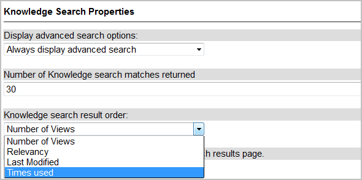

Legacy:Enhancing Knowledge Article Tracking
Contents
1 Overview
Administrators can customize the Knowledge Base application to provide additional reporting and searching capabilities. For the standard methods of tracking article use, see Tracking Knowledge Articles. Keep in mind that ServiceNow retains the customizations you apply to objects in the base system. System upgrades do not apply new features to customized objects.
| |
Caution: The customization described here was developed for use in specific ServiceNow instances, and is not supported by ServiceNow Customer Support. This method is provided as-is and should be tested thoroughly before implementation. Post all questions and comments regarding this customization to our community forum. |
2 Knowledge Reporting Enhancements
Use these instructions and scripts to calculate the number of times an article is viewed but not attached to a task (such as an incident, problem, or change) and to track the last time an article was viewed. Then, use this information to enhance your knowledge reports.
- Configure the Knowledge form by creating these new fields.
- Last viewed (type is Date-time)
- Times used (type is Integer)
- Last used (type is Date-time)
- Viewed but not used (type is Integer)
- Add the View count field (which already exists) to the form. For consistency, you may want to change the label of this field to be Times viewed.
Keep in mind that the View count field displays the number of times an article has been viewed in the last 30 days. (This default is controlled by a property that can be modified. Set the property value to 0 to consider all article views.) - Modify the dictionary entries for all of these fields and make them read-only.
After you add the fields, the form looks something like this.
- Create a business rule that calculates the Viewed but not used field. The business rule subtracts Times used from Times viewed each time the record is updated.
Here is a copy of the script that you can copy and paste into the Business Rule form:calculateNotUsed(); function calculateNotUsed() { var vViewed = Number(current.sys_view_count); var vUsed = Number(current.u_times_used); current.u_viewed_but_not_used = vViewed - vUsed; }
- Navigate to System Policy > Script Actions and create a new script action that updates the Last viewed time stamp when it identifies that a knowledge article has been viewed.
The script should look like this:
Here is a copy of the script that you can copy and paste into the Script Action form:var kbNum = event.parm1; var rec = new GlideRecord('kb_knowledge'); rec.addQuery('number',kbNum); rec.query(); while(rec.next()){ rec.u_last_viewed = gs.nowDateTime(); rec.update(); }
{kind=link}
{kind=link}
{kind=link}
3 Knowledge Search Enhancements
Now that you’re collecting information about the number of times an article has actually been used in an incident, you may want to order search results by this number. To do this, modify two records in the System Properties table.
- In the navigation filter, enter sys_properties.list to open the System Properties table.
- Open the glide.knowman.order.search record.
- in the Choices field, add Times used=u_times_used at the end.
- Click Update.
- Open the glide.knowman.section_sort record.
- in the Choices field, add Times used=u_times_used at the end.
- Click Update.
- Navigate to Knowledge Base > Properties and find the Knowledge search result order property.
- You can now select Times used for sorting search results.
- 
- Navigate to System UI > UI Pages to change the kb_find UI page so that it can identify these new sort parameters.
- Open the kb_find UI page.
- Replace the contents of the HTML field with the code below.
- Click Update.
{kind=link}
if (sortSequence != 'relevancy') {
if (sortSequence == 'views'){
kb.orderByDesc('sys_view_count');
}
else{
kb.orderByDesc('u_times_used');
}
}
3.1 Using Knowledge Search for Tasks
If you want to expand the knowledge search capabilities to include incident, problem, and change request records as well, use the Searching Tasks with kb_find script. This script is a modification of the kb_find UI page in the base system. It modifies the existing knowledge search functionality by returning results from the Incident, Problem, and Change Request tables as well as the knowledge base, enabling a kind of global search.
| |
Note: Searching returns only those records the user has role-based permissions to view. |
The following script returns a maximum of 20 results from the Task tables to avoid returning potentially thousands of results. You can change the number of results by modifying the var maxTasks = 20; line below. To implement this script and other kb_find modifications in this article:
- Navigate to System UI > UI Pages.
- Open the kb_find page.
- Replace the script in the HTML field with the code below.
- Click Update.
| View the script |
|---|
<?xml version="1.0" encoding="utf-8" ?>
<!--
Knowledge management v2 - list viewer
-->
<j:jelly trim="false" xmlns:j="jelly:core" xmlns:g="glide" xmlns:j2="null" xmlns:g2="null">
<link href="kb_styles.cssx" type="text/css" rel="stylesheet" />
<SCRIPT LANGUAGE="JavaScript" SRC="kb.jsx?v=${gs.getProperty('glide.builddate')}" />
<g2:evaluate jelly="true" var="jvar_item">
var kb = new GlideRecord('kb_knowledge');
var kb1 = new GlideRecord('u_kb_lookup');
kb1.initialize();
var task = new GlideRecord('task');
var qc = task.addQuery('sys_class_name', 'problem');
qc.addOrCondition('sys_class_name', 'incident');
qc.addOrCondition('sys_class_name', 'change_request');
<!--task.orderByAsc('number');-->
var operator = 'IR_AND_QUERY';
if (jelly.sysparm_operator)
operator = jelly.sysparm_operator;
if (jelly.sysparm_search $[AND] jelly.sysparm_search.length != 0){
kb.addQuery(operator, jelly.sysparm_search);
kb1.u_search_term = jelly.sysparm_search;
task.addQuery(operator, jelly.sysparm_search);
}
if (jelly.sysparm_topic $[AND] jelly.sysparm_topic.length != 0 $[AND] jelly.sysparm_topic != 'null') {
gs.print("adding topic = " + jelly.sysparm_topic);
kb.addQuery('topic', jelly.sysparm_topic);
kb1.u_topic = jelly.sysparm_topic;
}
if (jelly.sysparm_category $[AND] jelly.sysparm_category.length != 0 $[AND] jelly.sysparm_topic != 'null') {
gs.print("adding category = " + jelly.sysparm_category);
kb.addQuery('category', jelly.sysparm_category);
kb1.u_category = jelly.sysparm_category;
}
kb.addQuery('active', 'true');
kb.addQuery('workflow_state', 'published');
var orderField = 'relevancy';
var sortSequence = gs.getProperty('glide.knowman.order.search');
if (sortSequence != 'relevancy') {
if (sortSequence == 'views'){
kb.orderByDesc('sys_view_count');
orderField = 'view count';
}
else{
kb.orderByDesc('u_times_used');
orderField = 'times used';
}
}
kb.query();
<j2:if test="$[gs.hasRole('itil')]">
task.query();
</j2:if>
var kbCount = kb.getRowCount();
var taskCount = task.getRowCount();
kb1.u_results_returned = kbCount;
if (jelly.sysparm_search $[AND] jelly.sysparm_search.length != 0){
kb1.u_user = gs.getUserID();
kb1.insert();
}
</g2:evaluate>
<table class="wide" cellspacing="0" border="0" style="margin-bottom: 8px;">
<tr>
<td class="title" nowrap="true" colspan="99">
<g:inline template="kb_header.xml" />
</td>
</tr>
</table>
<table class="wide" cellspacing="0" border="0" style="margin-bottom: 8px;">
<tr class="header" border="0" cellspacing="0">
<td class="column_head" colspan="3">
<table border="0" cellspacing="0" cellpadding="0">
<tr class="header" border="0" cellspacing="0">
<form method="GET" action="${sysparm_base_form}.do" name="${sysparm_base_form}.do">
<input type="HIDDEN" name="sys_action" value="none" />
<g2:emitParms suppress="sysparm_this_url_enc" />
<input type="HIDDEN" name="sysparm_modify_check" value="true" />
<td>
<input type="HIDDEN" id="sysverb_back" />
<img name="not_important"
value="sysverb_back"
id="sysverb_back"
onClick="return gsftSubmit(document.getElementById('sysverb_back'));"
src="images/green_back.gifx"
title="${gs.getMessage('Back')}"
alt="${gs.getMessage('Back')}"
style="cursor:hand; margin-left: 4px;"/>
</td>
</form>
<td>
<div class="caption" style="margin-top: 2px;">
$[gs.getMessage('kb.banner.title')]
$[gs.getMessage('search results')]
($[kbCount] $[gs.getMessage('results')] $[gs.getMessage('sorted by')] $[gs.getMessage(orderField)])
</div>
</td>
</tr>
</table>
</td>
</tr>
<j2:set var="jvar_printed_some" value="false"/>
<j2:set var="jvar_printed_some_task" value="false"/>
<g2:inline template="kb_search_results.xml"/>
<j2:if test="$[jvar_printed_some == false]">
<g2:evaluate var="jvar_item" expression="gs.flushMessages();"/>
<tr>
<td>
<div class="kb_no_text">Your search - <span class="kb_stand_out">$[sysparm_search]</span> - did not match any documents.</div>
</td>
</tr>
</j2:if>
<g2:evaluate>
var ctr = 0;
var maxTasks = 20;
if (taskCount > maxTasks){
taskCount = maxTasks;
}
</g2:evaluate>
<tr border="0" cellspacing="0"><td><br /></td></tr>
<tr class="header" border="0" cellspacing="0">
<td class="column_head" colspan="3">
<table border="0" cellspacing="0" cellpadding="0">
<tr class="header" border="0" cellspacing="0">
<form method="GET" action="${sysparm_base_form}.do" name="${sysparm_base_form}.do">
<input type="HIDDEN" name="sys_submitted" value="false" />
<input type="HIDDEN" name="sys_action" value="none" />
<g2:emitParms suppress="sysparm_this_url_enc" />
<input type="HIDDEN" name="sysparm_modify_check" value="true" />
<td>
<input type="HIDDEN" id="sysverb_back" />
<img name="not_important"
value="sysverb_back"
id="sysverb_back"
onClick="return gsftSubmit(document.getElementById('sysverb_back'));"
src="images/green_back.gifx"
title="${gs.getMessage('Back')}"
alt="${gs.getMessage('Back')}"
style="cursor:hand; margin-left: 4px;"/>
</td>
</form>
<td>
<div class="caption" style="margin-top: 2px;">
$[gs.getMessage('Task results ')]($[taskCount] $[gs.getMessage('results')])
</div>
</td>
</tr>
</table>
</td>
</tr>
<j2:set var="jvar_print_section" value="false"/>
<j2:while test="$[ctr != maxTasks]">
<g2:evaluate>
<j2:if test="$[task.next()]">
<j2:set var="jvar_print_section" value="true"/>
</j2:if>
</g2:evaluate>
<j2:if test="$[jvar_print_section == true]">
<j2:set var="jvar_printed_some_task" value="true"/>
<j2:set var="jvar_task_link" value="task.do?sys_id=$[task.sys_id]"/>
<tr>
<td>
<div style="margin-top: 10px;"></div>
<g2:evaluate var="jvar_desc">
var answer = task.short_description;
answer;
</g2:evaluate>
<div>
<a href="$[jvar_task_link]" class="kb_search_header"><g2:highlighter search="$[sysparm_search]">$[jvar_desc]</g2:highlighter></a>
</div>
<div><g2:highlighter search="$[sysparm_search]">$[task.description]</g2:highlighter></div>
<div class="kb_add_info">
Result type:$[SP]<font style="text-transform: uppercase;">$[task.sys_class_name]</font>$[SP]>
<j2:set var="jvar_got_stackname" value="$[sysparm_nameofstack.length() > 0]"/>
<j2:if test="$[jvar_got_stackname == false]">
<a class="kb_add_info_link" href="task.do?sys_id=$[task.sys_id]">$[task.number]</a>
</j2:if>
</div>
</td>
</tr>
</j2:if>
<g2:evaluate>
ctr++;
</g2:evaluate>
<j2:set var="jvar_print_section" value="false"/>
</j2:while>
<j2:if test="$[jvar_printed_some_task == false]">
<g2:evaluate var="jvar_item" expression="gs.flushMessages();"/>
<tr>
<td>
<div class="kb_no_text">Your search - <span class="kb_stand_out">$[sysparm_search]</span> - did not match any tasks.</div>
</td>
</tr>
</j2:if>
</table>
</j:jelly>
|
3.2 Custom Knowledge Search from Multiple Fields
When searching the knowledge base from a task record, it might be helpful to use multiple fields from the form as your search query. You can accomplish this by modifying the dictionary for the search field and creating an onLoad() client script. For more information, see Administering Knowledge Search.
4 Notification of Rarely-Used Knowledge Articles
You can create a report that shows which articles have not been used for a specific period of time. Optionally, you may want to trigger some sort of event, like an email notification to a Knowledge Manager, if an article hasn’t been used recently. To do this, create a new schedule item, a new event, and a new email notification.
To create the new schedule:
- Navigate to System Scheduler > Scheduled Jobs > Scheduled Jobs.
- You may need to activate this application.
- Create a new schedule item that looks like this. Note that the Job context field must contain fcScriptName=in the schedule record.
- Use the script below to copy and paste into the Schedule form:
- Create an event called kb.unused.notify to complete the implementation.
- Register the event.
- Create an email notification to alert the Knowledge Manager of the rarely used articles.
- The script triggers a kb.unused.notify event that you can then use to trigger an email notification. Make sure that this event exists in the event registry before selecting it in the email notification. For more information, see Events and Email Notification.
{kind=link}
| View the script for the Schedule form |
|---|
// This script triggers an event to notify a Knowledge Manager
// if a knowledge base article hasn't been used in a specified number of months -
// indicated by the <tt>pn</tt> variable.
var pn = 6;
if (pn > 0) {
var gr = new GlideRecord('kb_knowledge');
gr.addQuery('workflow_state', 'published');
gr.addQuery('u_last_used', '<', gs.monthsAgo(pn));
gr.query();
while(gr.next()) {
gs.eventQueue("kb.unused.notify", gr, gs.getUserID(), gs.getUserName());
}
}
|
5 Additional Knowledge Base Modifications
Additional knowledge base changes that may be helpful include:
- Configure the Knowledge form and add the CI field so that you can track knowledge articles for a particular CI.
- Configure the Knowledge form and add the Meta field so that you can add search keywords that make it easier to target knowledge articles.